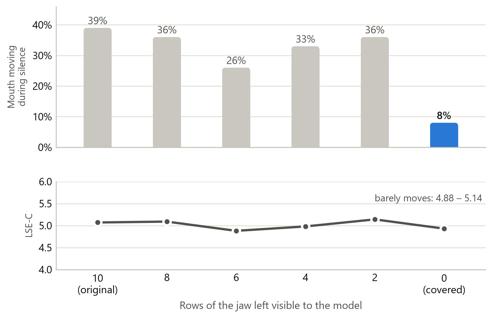
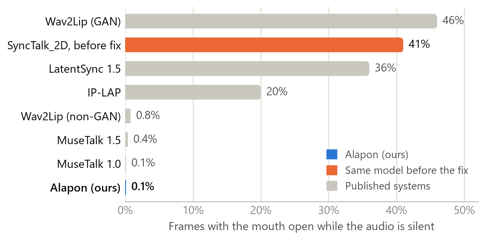
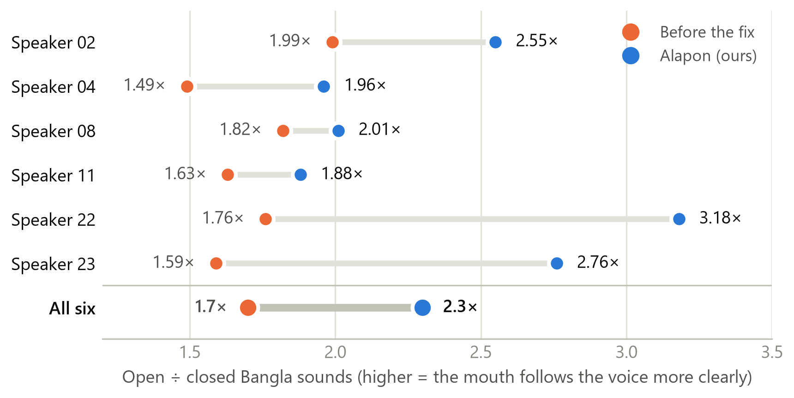
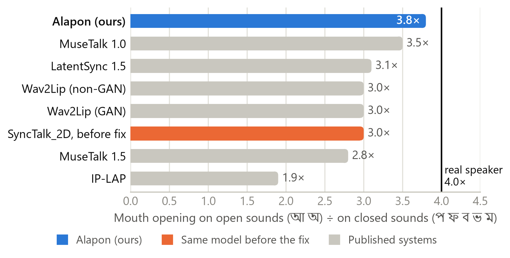
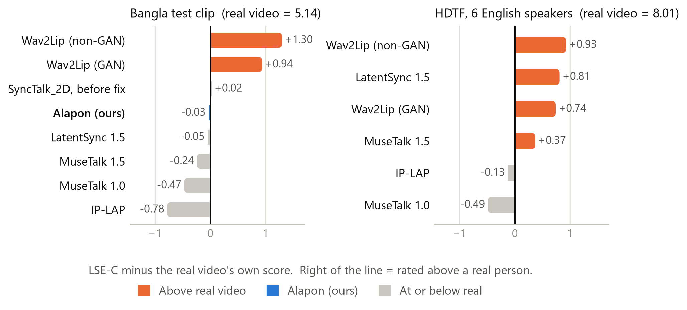

<title>Alapon Poster</title>
<link rel="preconnect" href="https://fonts.googleapis.com">
<link rel="preconnect" href="https://fonts.gstatic.com" crossorigin>
<link rel="stylesheet" href="https://fonts.googleapis.com/css2?family=Anek+Bangla:wdth,wght@75..125,400..800&family=Atkinson+Hyperlegible:ital,wght@0,400;0,700;1,400&family=IBM+Plex+Mono:wght@400;600&display=swap">
<style>
  /* A poster is one printed object: a single deliberate light look. */
  :root {
    color-scheme: light;
    --ground: #eef2f7;
    --panel: #ffffff;
    --ink: #121a2a;
    --ink-2: #4a5468;
    --muted: #7a8396;
    --line: #dde2ea;
    --alapon: #2a78d6;
    --alapon-soft: #e3eefb;
    --leak: #eb6834;
    --leak-soft: #fdebe3;
    --display: "Anek Bangla", "Nirmala UI", "Noto Sans Bengali", system-ui, sans-serif;
    --body: "Atkinson Hyperlegible", "Segoe UI", system-ui, sans-serif;
    --mono: "IBM Plex Mono", ui-monospace, "Cascadia Mono", Consolas, monospace;
  }
  * { box-sizing: border-box; }
  body {
    background: var(--ground);
    color: var(--ink);
    font-family: var(--body);
    font-size: 16px;
    line-height: 1.5;
    padding-inline: clamp(16px, 3vw, 40px);
    padding-block: clamp(16px, 3vw, 40px);
  }
  .sheet {
    max-width: 1500px;
    margin-inline: auto;
    background: var(--panel);
    border: 1px solid var(--line);
    display: grid;
    gap: 0;
  }

  /* ---- header ---- */
  header {
    display: grid;
    grid-template-columns: 1fr auto;
    gap: 24px 40px;
    align-items: end;
    padding: clamp(20px, 4vw, 56px) clamp(20px, 4vw, 56px) clamp(18px, 3vw, 36px);
    border-bottom: 1px solid var(--line);
    position: relative;
    overflow: hidden;
  }
  .eyebrow {
    font-family: var(--mono);
    font-size: 13px;
    letter-spacing: 0.08em;
    text-transform: uppercase;
    color: var(--muted);
    margin: 0 0 14px;
  }
  .name {
    display: flex;
    align-items: baseline;
    flex-wrap: wrap;
    gap: 6px 22px;
    margin: 0;
    font-family: var(--display);
    font-weight: 800;
    font-stretch: 112%;
    line-height: 0.95;
    letter-spacing: -0.01em;
  }
  .name .latin { font-size: clamp(56px, 9vw, 132px); }
  .name .bangla {
    font-size: clamp(44px, 7vw, 104px);
    color: var(--alapon);
    font-weight: 700;
    font-stretch: 100%;
  }
  .thesis {
    font-family: var(--display);
    font-weight: 500;
    font-stretch: 95%;
    font-size: clamp(20px, 2.1vw, 30px);
    line-height: 1.22;
    max-width: 34ch;
    margin: 18px 0 0;
    text-wrap: balance;
  }
  .byline {
    font-size: 14px;
    color: var(--ink-2);
    text-align: right;
    line-height: 1.55;
  }
  .byline strong { color: var(--ink); }
  .byline .inst { font-family: var(--mono); font-size: 12px; letter-spacing: 0.06em; text-transform: uppercase; color: var(--muted); }

  /* ---- key numbers ---- */
  .numbers {
    display: grid;
    grid-template-columns: repeat(6, 1fr);
    border-bottom: 1px solid var(--line);
  }
  .num {
    padding: 20px clamp(14px, 1.6vw, 26px);
    border-right: 1px solid var(--line);
    display: grid;
    gap: 4px;
    align-content: start;
  }
  .num:last-child { border-right: 0; }
  .num .v {
    font-family: var(--display);
    font-weight: 700;
    font-stretch: 105%;
    font-size: clamp(28px, 2.9vw, 44px);
    line-height: 1;
    color: var(--ink);
  }
  .num .v .from { color: var(--leak); font-weight: 600; }
  .num .v .arrow { color: var(--muted); font-weight: 400; margin-inline: 0.12em; }
  .num .v .to { color: var(--alapon); }
  .num .k { font-size: 14px; color: var(--ink-2); line-height: 1.35; }

  /* ---- body grid ---- */
  .cols {
    display: grid;
    grid-template-columns: repeat(3, minmax(0, 1fr));
  }
  .col {
    padding: clamp(18px, 2.2vw, 32px);
    display: grid;
    gap: 30px;
    align-content: start;
    border-right: 1px solid var(--line);
  }
  .col:last-child { border-right: 0; }
  section { display: grid; gap: 12px; }
  .step {
    font-family: var(--mono);
    font-size: 12px;
    letter-spacing: 0.08em;
    text-transform: uppercase;
    color: var(--muted);
    display: flex;
    align-items: center;
    gap: 10px;
    margin: 0;
  }
  .step b {
    display: inline-grid;
    place-items: center;
    width: 24px; height: 24px;
    border-radius: 50%;
    background: var(--ink);
    color: var(--panel);
    font-weight: 600;
    letter-spacing: 0;
  }
  .step.warn b { background: var(--leak); }
  .step.good b { background: var(--alapon); }
  h2 {
    margin: 0;
    font-family: var(--display);
    font-weight: 700;
    font-stretch: 100%;
    font-size: clamp(22px, 1.9vw, 28px);
    line-height: 1.15;
    text-wrap: balance;
  }
  p { margin: 0; max-width: 62ch; }
  .muted { color: var(--ink-2); }
  ul.tight { margin: 0; padding-left: 1.1em; display: grid; gap: 6px; }
  ul.tight li::marker { color: var(--muted); }
  .bn { font-family: var(--display); font-weight: 600; font-stretch: 100%; white-space: nowrap; }
  .hl { color: var(--alapon); font-weight: 700; }
  .bad { color: var(--leak); font-weight: 700; }

  figure { margin: 0; display: grid; gap: 8px; }
  figure img { width: 100%; height: auto; display: block; border: 1px solid var(--line); background: #fff; }
  figcaption { font-size: 14px; color: var(--ink-2); line-height: 1.4; }
  figcaption b { color: var(--ink); }

  /* pipeline */
  .pipe {
    display: grid;
    gap: 6px;
    font-size: 14px;
  }
  .node {
    border: 1px solid var(--line);
    padding: 9px 12px;
    display: grid;
    grid-template-columns: 1fr auto;
    gap: 2px 12px;
    align-items: baseline;
    background: var(--panel);
  }
  .node .t { font-weight: 700; }
  .node .d { color: var(--ink-2); grid-column: 1 / -1; font-size: 13px; }
  .node .where { font-family: var(--mono); font-size: 11px; letter-spacing: 0.06em; text-transform: uppercase; color: var(--muted); }
  .node.alapon { border-color: var(--alapon); background: var(--alapon-soft); }
  .node.alapon .where { color: var(--alapon); }
  .flow { font-family: var(--mono); font-size: 12px; color: var(--muted); padding-left: 12px; }

  /* tables */
  .tbl-wrap { overflow-x: auto; }
  table { width: 100%; border-collapse: collapse; font-size: 14px; font-variant-numeric: tabular-nums; }
  th, td { text-align: left; padding: 6px 8px 6px 0; border-bottom: 1px solid var(--line); vertical-align: top; }
  th { font-family: var(--mono); font-size: 11px; letter-spacing: 0.06em; text-transform: uppercase; color: var(--muted); font-weight: 600; }
  td.n { text-align: right; padding-right: 0; }
  tr.us td { font-weight: 700; color: var(--alapon); }

  /* mask illustration */
  .mask {
    display: grid;
    grid-template-columns: auto auto 1fr;
    gap: 16px;
    align-items: center;
  }
  .mask svg { width: 92px; height: auto; }
  .mask .lab { font-family: var(--mono); font-size: 11px; letter-spacing: 0.06em; text-transform: uppercase; text-align: center; margin-top: 4px; }
  .callout {
    border-left: 3px solid var(--leak);
    background: var(--leak-soft);
    padding: 10px 14px;
    font-size: 15px;
  }
  .callout.good { border-color: var(--alapon); background: var(--alapon-soft); }
  .big { font-family: var(--display); font-weight: 700; font-size: 34px; line-height: 1; }

  .status { display: grid; gap: 6px; font-size: 14px; }
  .status div { display: grid; grid-template-columns: 92px 1fr; gap: 10px; align-items: baseline; }
  .pill {
    font-family: var(--mono); font-size: 11px; letter-spacing: 0.05em; text-transform: uppercase;
    padding: 2px 7px; border-radius: 3px; text-align: center; font-weight: 600;
  }
  .pill.done { background: var(--alapon-soft); color: #1c5cab; }
  .pill.next { background: #eef0f3; color: var(--ink-2); }

  .refs { font-size: 12.5px; color: var(--ink-2); line-height: 1.45; display: grid; gap: 3px; margin: 0; padding-left: 1.6em; }

  footer {
    border-top: 1px solid var(--line);
    padding: 16px clamp(20px, 4vw, 56px);
    display: flex;
    flex-wrap: wrap;
    gap: 8px 28px;
    justify-content: space-between;
    font-size: 13px;
    color: var(--ink-2);
  }
  footer .mono { font-family: var(--mono); font-size: 12px; }

  @media (max-width: 1100px) {
    .cols { grid-template-columns: repeat(2, minmax(0, 1fr)); }
    .col:nth-child(2) { border-right: 0; }
    .col:nth-child(3) { grid-column: 1 / -1; border-top: 1px solid var(--line); border-right: 0; }
    .numbers { grid-template-columns: repeat(3, 1fr); }
    .num:nth-child(3) { border-right: 0; }
    .num:nth-child(-n+3) { border-bottom: 1px solid var(--line); }
  }
  @media (max-width: 720px) {
    header { grid-template-columns: 1fr; }
    .byline { text-align: left; }
    .cols { grid-template-columns: 1fr; }
    .col { border-right: 0; border-top: 1px solid var(--line); }
    .col:first-child { border-top: 0; }
    .numbers { grid-template-columns: repeat(2, 1fr); }
    .num { border-right: 1px solid var(--line); border-bottom: 1px solid var(--line); }
    .num:nth-child(2n) { border-right: 0; }
    .num:nth-child(3) { border-right: 1px solid var(--line); }
    .mask { grid-template-columns: auto auto; }
    .mask p { grid-column: 1 / -1; }
  }
</style>

<main class="sheet">
  <header>
    <div>
      <p class="eyebrow">Final Year Design Project · CSE · United International University</p>
      <h1 class="name"><span class="latin">Alapon</span><span class="bangla" lang="bn">আলাপন</span></h1>
      <p class="thesis">A real-time Bangla talking avatar that runs on a laptop, and what building it revealed about how lip-sync is measured.</p>
    </div>
    <div class="byline">
      <div class="inst">Group E1</div>
      <strong>Sahil Al Farib</strong> · Momota Ahsana Meem<br>
      Sheikh Redwanul Islam · Khan Md. Shams Arefin<br>
      Sumaiya Akter Eva · Rumman Hossain<br>
      <span class="muted">Supervisor: Dr. Mohammad Nurul Huda<br>Co-supervisor: Azizur Rahman Anik</span>
    </div>
  </header>

  <div class="numbers" aria-label="Key results">
    <div class="num"><div class="v"><span class="from">41%</span><span class="arrow">→</span><span class="to">0.1%</span></div><div class="k">frames with the mouth moving during silence, before and after our fix</div></div>
    <div class="num"><div class="v"><span class="to">3.8×</span></div><div class="k">open ÷ closed Bangla sounds. The real speaker scores 4.0×</div></div>
    <div class="num"><div class="v"><span class="from">1.7×</span><span class="arrow">→</span><span class="to">2.3×</span></div><div class="k">the same, on six Bangla voices the model never heard</div></div>
    <div class="num"><div class="v">49 MB</div><div class="k">model size. Published alternatives: 436 MB to 5 GB</div></div>
    <div class="num"><div class="v">30 fps</div><div class="k">on a laptop RTX 3050, using 0.3 GB of its 4 GB</div></div>
    <div class="num"><div class="v">1.5–2 s</div><div class="k">from the user finishing a sentence to the avatar answering</div></div>
  </div>

  <div class="cols">
    <!-- ================= column 1 ================= -->
    <div class="col">
      <section>
        <p class="step"><b>1</b> The gap</p>
        <h2>No open talking avatar had ever been trained or measured on Bangla</h2>
        <p>Talking-head research is built and evaluated almost entirely in English. Commercial cloud avatars now offer Bangla voices, but they are closed, paid per minute, cloud-only, and publish nothing about how well their lips follow Bangla. The 3D systems that look best need GPUs far beyond a laptop.</p>
        <p class="muted">We set out to build one that is open, speaks Bangla, runs on the laptop in front of you, and whose lips we can prove follow the audio.</p>
      </section>

      <section>
        <p class="step"><b>2</b> The system</p>
        <h2>Speak Bangla, get a face that answers in Bangla</h2>
        <div class="pipe" aria-label="System pipeline">
          <div class="node"><span class="t">Browser</span><span class="where">user</span><span class="d">microphone in, avatar video and live transcript out</span></div>
          <div class="flow">↓ LiveKit, real-time audio and video</div>
          <div class="node"><span class="t">Bangla agent</span><span class="where">laptop + cloud</span><span class="d">Gemini 3.1 Flash Live, speech to speech. Transcription pinned to bn-BD; a local voice detector waits 0.55 s so natural Bangla pauses are not cut off</span></div>
          <div class="flow">↓ reply audio, streamed</div>
          <div class="node alapon"><span class="t">Avatar server · Alapon</span><span class="where">laptop GPU</span><span class="d">streaming audio features that match offline ones exactly; renders the mouth frame by frame; audio never waits for video</span></div>
          <div class="flow">↓ lip-synced frames + audio, back to the browser</div>
        </div>
      </section>

      <section>
        <p class="step"><b>3</b> Choosing the model</p>
        <h2>Only one candidate fits a 4 GB laptop GPU</h2>
        <div class="tbl-wrap">
          <table>
            <thead><tr><th>Model</th><th>Type</th><th class="n">Checkpoint</th></tr></thead>
            <tbody>
              <tr class="us"><td>SyncTalk_2D</td><td>2D, one speaker</td><td class="n">49 MB</td></tr>
              <tr><td>Wav2Lip</td><td>2D, any face</td><td class="n">436 MB*</td></tr>
              <tr><td>IP-LAP</td><td>2D, any face</td><td class="n">475 MB</td></tr>
              <tr><td>MuseTalk 1.5</td><td>2D latent</td><td class="n">3,400 MB</td></tr>
              <tr><td>LatentSync 1.5</td><td>latent diffusion</td><td class="n">5,072 MB</td></tr>
            </tbody>
          </table>
        </div>
        <p class="muted" style="font-size:14px">We chose SyncTalk_2D and confirmed the choice by running every alternative on the same Bangla clip. It must be trained per face (about five minutes of video), which suits an avatar of one fixed speaker. <span style="font-size:12.5px">*includes training optimiser state</span></p>
      </section>
    </div>

    <!-- ================= column 2 ================= -->
    <div class="col">
      <section>
        <p class="step warn"><b>4</b> The gap in the model</p>
        <h2>The avatar was copying the jaw instead of listening</h2>
        <div class="mask">
          <div>
            <svg viewBox="0 0 64 88" role="img" aria-labelledby="m1t">
              <title id="m1t">Original mask: the bottom rows of the face crop stay visible</title>
              <rect x="1" y="1" width="62" height="86" fill="#ffffff" stroke="#c3c9d4" stroke-width="1.5"/>
              <rect x="7" y="34" width="50" height="42" fill="#121a2a"/>
              <rect x="7" y="76" width="50" height="10" fill="#fdebe3"/>
              <path d="M18 81 Q32 86 46 81" fill="none" stroke="#eb6834" stroke-width="2"/>
            </svg>
            <div class="lab" style="color:var(--leak)">Original</div>
          </div>
          <div>
            <svg viewBox="0 0 64 88" role="img" aria-labelledby="m2t">
              <title id="m2t">Alapon mask: the jaw is hidden as well</title>
              <rect x="1" y="1" width="62" height="86" fill="#ffffff" stroke="#c3c9d4" stroke-width="1.5"/>
              <rect x="7" y="34" width="50" height="53" fill="#121a2a"/>
            </svg>
            <div class="lab" style="color:var(--alapon)">Alapon</div>
          </div>
          <p style="font-size:15px">The model paints the mouth into a frame whose mouth is blacked out. The original mask left the <b>bottom ten rows</b>, the chin and jaw, visible. The model learned to read the jaw: that strip produced <span class="bad">91% of all mouth motion</span>.</p>
        </div>
        <figure>
          
          <figcaption><b>Only hiding the whole jaw stops the copying.</b> Six identical models, differing only in how much jaw they see. The standard lip-sync score (bottom) cannot tell them apart.</figcaption>
        </figure>
        <p class="muted" style="font-size:14px">Three more gaps held the model back: a lip-sync expert trained only on matching pairs, a 10× sync-loss weight, and different reference frames in training and use. Alapon closes all four.</p>
      </section>

      <section>
        <p class="step good"><b>5</b> Alapon</p>
        <h2>A mouth that stays still in silence and moves with speech</h2>
        <figure>
          
          <figcaption><b>41% → 0.1%.</b> Driven with silent audio, Alapon's mouth stays shut. MuseTalk also stays still, but it barely moves during speech either (articulation 0.22–0.53 against Alapon's 0.94).</figcaption>
        </figure>
        <figure>
          
          <figcaption><b>Better on every Bangla voice it had never heard.</b> Our speaker's face, driven by six other speakers' audio, so the mouth can only follow the voice.</figcaption>
        </figure>
      </section>
    </div>

    <!-- ================= column 3 ================= -->
    <div class="col">
      <section>
        <p class="step good"><b>6</b> Bangla sounds</p>
        <h2>Lips close on <span class="bn" lang="bn">প ব ম</span> and open on <span class="bn" lang="bn">আ</span></h2>
        <figure>
          
          <figcaption><b>Closest to the real speaker.</b> A Bangla speech recogniser times every letter; we compare mouth opening on open and closed sounds, using our Bangla phoneme-to-viseme map.</figcaption>
        </figure>
      </section>

      <section>
        <p class="step warn"><b>7</b> The same leak, elsewhere</p>
        <h2>Five of six published systems leak, and the standard score cannot see it</h2>
        <figure>
          
          <figcaption><b>Rated above a real person.</b> A real speaker is perfectly in sync with their own voice, yet four of six systems beat it on HDTF.</figcaption>
        </figure>
        <ul class="tight" style="font-size:15px">
          <li>Silent audio makes their mouths move in <span class="bad">20–46%</span> of frames on at least one dataset.</li>
          <li>Leakage depends on the speaker: MuseTalk 1.5 leaks <b>0.4%</b> on our clip and <b>46%</b> on HDTF. One clip is not enough to judge a system.</li>
        </ul>
      </section>

      <section>
        <p class="step"><b>8</b> Next</p>
        <h2>A journal paper in progress</h2>
        <p style="font-size:15px"><i>Evaluation Integrity in Audio-Driven Talking-Head Generation</i>, targeting IEEE Transactions on Multimedia.</p>
        <div class="status">
          <div><span class="pill done">Done</span><span>mask experiment, 6 systems × 2 datasets, Bangla sound test</span></div>
          <div><span class="pill next">Running</span><span>clean retrain on training frames only</span></div>
          <div><span class="pill next">Planned</span><span>blind rating study with ≥15 native Bangla speakers</span></div>
        </div>
        <p class="muted" style="font-size:13.5px">Limits: one speaker; test-clip scores come from a model whose training overlapped the test clip (the silence and six-voice results are unaffected); lip opening is shown, lip shape is not yet.</p>
      </section>

      <section>
        <p class="step">References</p>
        <ol class="refs">
          <li>Prajwal et al., Wav2Lip. ACM MM 2020.</li>
          <li>Chung &amp; Zisserman, SyncNet. ACCV Workshops 2016.</li>
          <li>Zhang et al., HDTF. CVPR 2021.</li>
          <li>Zhong et al., IP-LAP. CVPR 2023.</li>
          <li>Bigata et al., KeySync. TMLR 2025.</li>
          <li>Li et al., LatentSync. arXiv 2412.09262.</li>
          <li>Zhang et al., MuseTalk. arXiv 2410.10122.</li>
          <li>Peng et al., SyncTalk_2D. GitHub.</li>
        </ol>
      </section>
    </div>
  </div>

  <footer>
    <span>Uses: Bangla-medium tutoring · public-service guidance · accessible, lip-readable answers</span>
    <span class="mono">Department of CSE · United International University · Dhaka · 2026</span>
  </footer>
</main>
